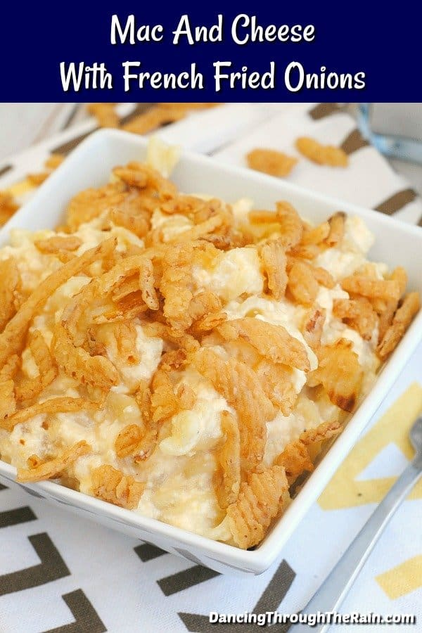

Mac and Cheese with French Fried Onion

Description
This Mac and Cheese with French Fried Onions is fantastic! Creamy,
cheesy, rich, and crunchy, this classic homemade mac and cheese
with a twist is going to be a family favorite!
Ingredients
- 16 oz rotini pasta
- 2 Tbsp olive oil
- 8 oz cream cheese brick
- 12 oz evaporated milk
- 2 cups milk
- 2 1/2 cups shredded cheddar cheese
- 2 cups french fried onions (like French’s Crispy Fried Onions)
Steps
-
Bring a large pot of water and the olive oil to a boil. Add the
dry rotini noodles and cook according to the package directions,
which is usually on a rolling boil for 10-12 minutes until al dente.
Remove from the heat and drain.
-
At the same time, in a large saucepan or dutch oven, add your
cream cheese, evaporated milk, milk, and shredded cheese.
-
At the same time, in a large saucepan or dutch oven, add your
cream cheese, evaporated milk, milk, and shredded cheese.
-
Once the creamy sauce has melted and thickened, add in the
cooked macaroni noodles and allow the mixture to heat through.
-
Distribute the mac and cheese into separate bowls or a large serving
dish and add the french fried onions to the top of the macaroni.
-
Make sure that you’ve added a good portion of the crunchy toppings to
each bowl! The crispy onions are meant to complement this creamy dish,
so this is an important step.
-
Serve immediately with a little bit of black pepper (if desired) and enjoy!